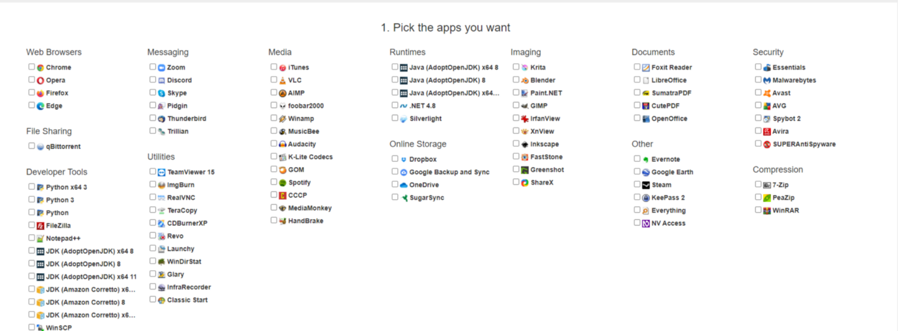
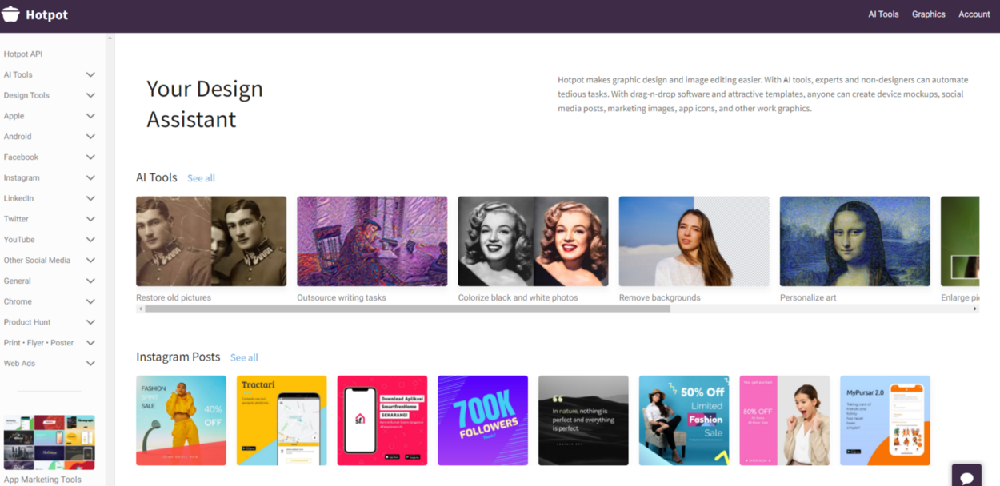
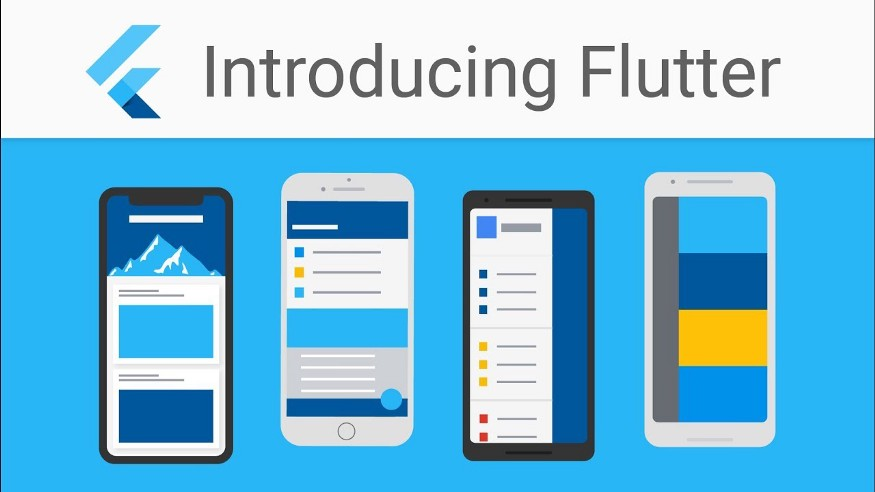
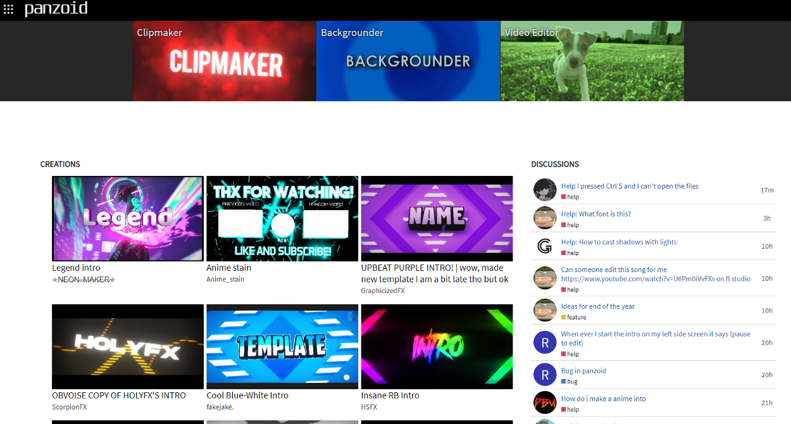
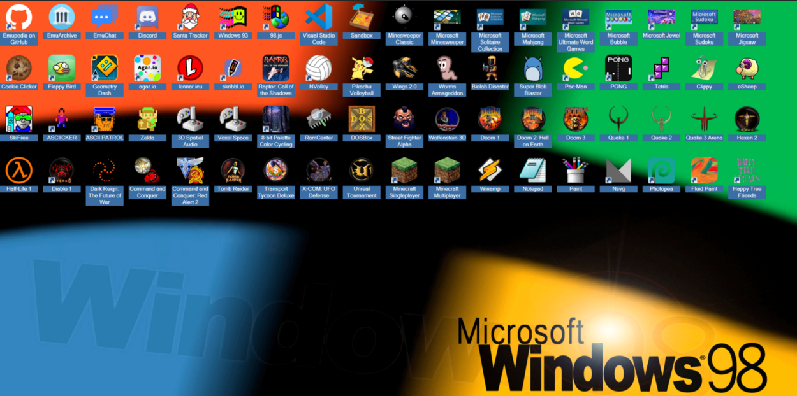
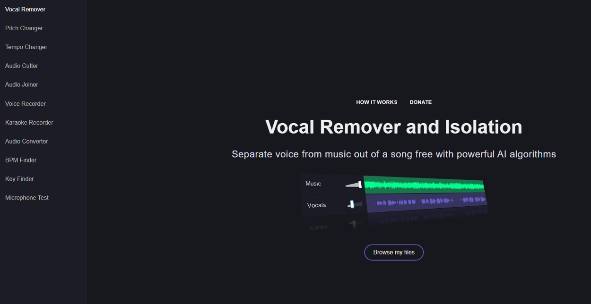
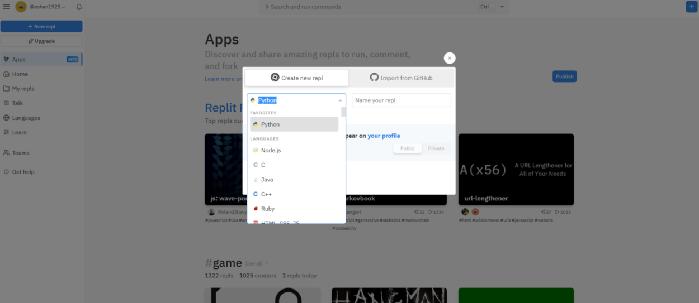

Hello guys so in this article I have listed down the websites which are very useful in general and many of
us don’t know about them in general. With the growing technology and the development around the world ,the
web engineers around the world have taken our websites to a whole new level. We can literally find websites
to code on and save our projects online and not only this whatever we need to do from video editing to photo
editing or anything we need is now available on the web form on the internet and that is itself both useful
and exciting.
Here I have listed 7 powerful and amazing websites that may help you and will save time for you. All
of this article has been sincerely written by me keeping in mind that
all these sites actually work . So without wasting any further time let’s get started.
P.S.-: I will be attaching the link to all these sites at the end of each site paragraph,also the name of
the site is itself the direct link.
7 Powerful and Amazing Websites you must know
31 July, Number of Words - 1530, 7 min Read
|

|
1. Ninite
This is really a very powerful website and it may be very helpful to you if you have buyed a new computer or
laptop. When any of us buy a new laptop or computer its difficult for us to remember what apps do we need to
install and not only this ,we need to visit n number of sites for installing n number of different apps
which is obviously annoying as when we should be busy exploring the features of our new laptop or computer
we are busy making all the installations. So for removing this difficulty from your life we have this site
,here we have a list of all the basic applications or softwares which we need at the time of installation
from all the categories like Web Browsing,Documents,Meets,Online storage,media and also development tools.
All we gotta do is just tick the check boxes and click on Get Your Ninite this will download a file to your system and you just need to install the file normally as you install any other application and voila all your selected apps are now installed on your system and ready to get used.
Link-: https://ninite.com/
All we gotta do is just tick the check boxes and click on Get Your Ninite this will download a file to your system and you just need to install the file normally as you install any other application and voila all your selected apps are now installed on your system and ready to get used.
Link-: https://ninite.com/

2. Hotpot
Next on our list is Hotpot.ai .This wonderful website can definitely be useful from time to time as we all
have a time in our life where we really wish we could restore the photos of our grandparents when they were
our age, sounds cool right. So our next website focuses on this, in this website we can restore the old
balck and white photos to coloured ones without making any efforts and just with a few clicks. All we gotta
do is open the website and then go to Restore old Pictures and this will remove all the scratches and
damages to the photograph that happened over the years after this we need to colorize our photo so we need
to click on Colorize Black and White Photos and then we need to upload the photo and select the colorization
factor (this will decide how bright colors are to be used in the photograph) and then click on Colorize and
there you go we have a fully restored colored photo to impress our grandparents and parents.
This site has many other features from Background removal to AI art personalization and many more you can explore all of them once you visit the site.
Link-: https://hotpot.ai/
This site has many other features from Background removal to AI art personalization and many more you can explore all of them once you visit the site.
Link-: https://hotpot.ai/

3. KickResume
Have you ever felt annoyed when you were making a resume and all of it doesn’t seem to adjust in one page,and if it does also we still are unable to make it look catchy for getting shortlisted and for overcoming this problem we try to spend hours taking workshops and watching youtube tutorials so that also is annoying enough, well I have got a clean clear and crisp solution to all your problems, this website over here is very useful for people who wanna make their resumes look powerful.
Well this website has many attractive templates for resume and the exciting part is we can filter the templates according to our job i.e. for example if i wish to apply my resume for the position of software engineer we just need to go to the website and under the resume examples section of the website we can just write the keywords of the job and hit enter ,after this we will find many brilliant resume templates that too with a tag that which company selected which resume and that is the best part about it as we can select the resume template that got selected to the company of our choice. There are many other features which this website provides like building your resume from linkedIn profile etc.
Link-: https://www.kickresume.com/
Link-: https://www.kickresume.com/

4. Panzoid
Well if you are a Youtuber or a content creator and you need a proper intro for your channel well this is the place where you can find classic to super crazy intros and that too all for free . You can edit these intros and give the required text and give it new features like different colors, font size and font style. The effect settings are a bit conceptual to be honest but yes with little practice you get perfect with time on it. Although it’s not a very big problem as most of the effects are pre designed and can be readily used for the editing or making of the intros.
For creating an intro all you need is you need to go on this website and select the intro or clip you think best for you and click on it and then it will take you to a project window, after this just edit the video with the text and download it, so after this we are ready with our intro.
The website also provides some extra features like Backgrounder and video editor which can also be explored by you depending upon the need you have.
Link-: https://panzoid.com/
For creating an intro all you need is you need to go on this website and select the intro or clip you think best for you and click on it and then it will take you to a project window, after this just edit the video with the text and download it, so after this we are ready with our intro.
The website also provides some extra features like Backgrounder and video editor which can also be explored by you depending upon the need you have.
Link-: https://panzoid.com/

5. Emu.os
To be honest this website is not very productive but still you are going to love this if you are a 90’s kid and if you are in love with Windows 95 ,windows 93 or windows 98 as all of these are available on this website it created a virtual os selected by you and gives you a feel of the operating system on the website itself. The interesting part here is that you get to experience the operating system with the old applications and and the new ones like you will be able to see applications like VS Code ,Discord , Github and on the other hand plenty of old 90’s games like Tomb Raider, Street Fighter Alpha and Wolfenstein 3D are available. So all over this website is not very productive but it is a very interesting website that I need to admit.
Link-: https://emupedia.net/beta/emuos/
Link-: https://emupedia.net/beta/emuos/

This website is very useful at times when you are a singer and you only need the background music of the song that you want to practice or perform. So what this site does is it separates the lyrics and the vocals of the song.
We need to just go to the website and drop our song and there we go we have both the lyrics and vocals of the song separated. It also has some features like a karaoke recorder,audio recorder,audio cutter,audio converter and audio joiner.We can definitely make use of them depending upon the need.
Link-: https://vocalremover.org/
Link-: https://vocalremover.org/

7. Repl.it
So coming to the last website this website is used for developers around the world. Now with the growing demand of programming many of us want to program and run our code and mostly we use VS Code for this but now it’s not compulsory that the laptop or computer you are working on must have VS Code installed on it.
The solution to this is this particular website as it lets you code online and not only this but save your projects online you can code in almost any of the popular programming languages like C++,C,Python,Java and many more.
Now for those who are comparing this website with onlineGdb.com ,we surely can but repl.it has a leading edge as it gives us features like we can host our projects say our Discord Bot or anything like that and also we have an option for creating a Database for the project. So this website at the end is a blessing for programmers.
Link-: https://repl.it/
The solution to this is this particular website as it lets you code online and not only this but save your projects online you can code in almost any of the popular programming languages like C++,C,Python,Java and many more.
Now for those who are comparing this website with onlineGdb.com ,we surely can but repl.it has a leading edge as it gives us features like we can host our projects say our Discord Bot or anything like that and also we have an option for creating a Database for the project. So this website at the end is a blessing for programmers.
Link-: https://repl.it/

So I guess at the end I was able to make this blog an interesting one and I also tried to cover websites from different sectors so that it does not get boring and each website may be a new journey for you. These 7 websites according to me are really cool websites and you can use them in your daily life for interesting stuff.